Activity: Relating faces using parallel, coplanar, perpendicular and concentric relationships
Learn how to use the Face Relate commands to apply relationships that will alter the shape of an existing part.
Start Solid Edge.
By default, Solid Edge opens the ordered environment. In this activity, you create a part in the synchronous environment, so change the option so that Solid Edge opens the synchronous environment.
On the File menu, click Settings→Options.
On the Helpers tab, set the Start Part and Sheet Metal documents using this template option to Synchronous.
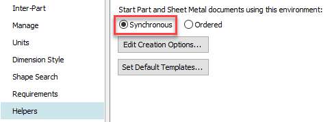
Click OK.
Open existing file relate.x_t.
Open with the iso metric part.par template.
Align several faces to change the shape of the part. The purpose of the activity is to learn to apply face relationships and observe the results.
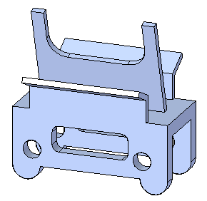
Vertically align the angled center feature (green).
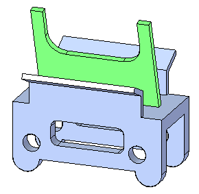
Select the side face shown. This is the seed face. This is the face to align.
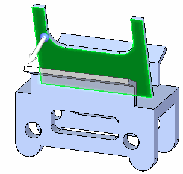
You want the other faces on the feature to move with the selected face. Selecting these faces makes them rigid to the seed face. You can select each face individually or use a select box. Press the Spacebar to enter the Add/Remove selection mode .
Rotate the view and use a selection box.
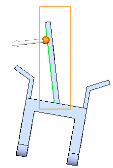
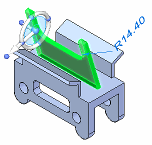
The select set is defined. On the Home tab→Face Relate group, choose the Parallel relationship command .
Select the face shown to align to.
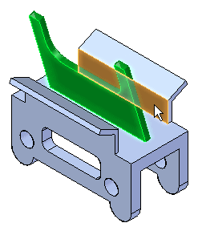
Click the Accept button and then press the Escape key.
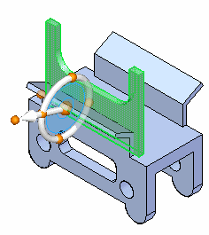
The center feature orients vertically and its position changes. Click the Cancel button. The select set is still active. Move the vertical feature to approximately the center of the top face. Uncheck the Offset Design Intent (1).
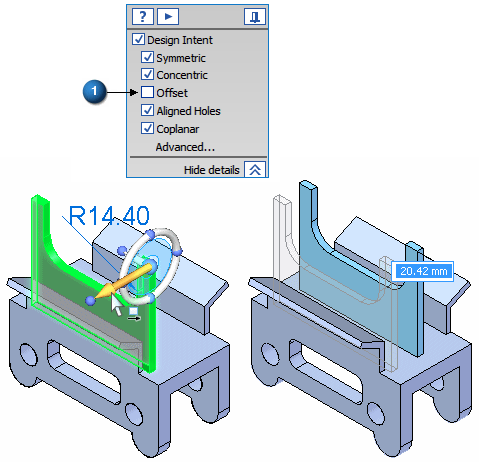
You can dimension the feature for an accurate position. Press Escape to end the command.
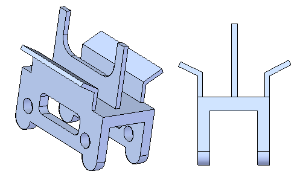
Align the (green) holes concentric to the (red) cylindrical feet.
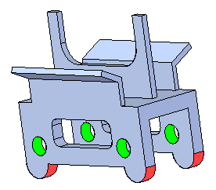
Select a hole. The holes are concentric. Since the concentric design intent relationship is recognized, both holes stay aligned.
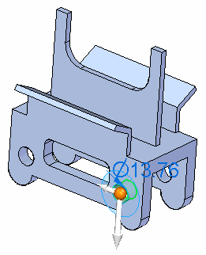
On the Home tab→Face Relate group, choose the Concentric relationship command .
Select the cylindrical face shown to align the hole to.
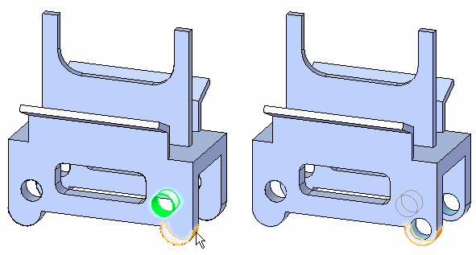
The Persist option is on by default. Click the Accept button.
Repeat for the other hole. Notice the concentric relationships are added to the Relationships collector in PathFinder.
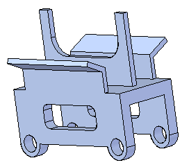
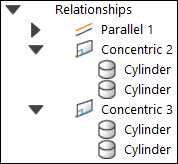
Align the angled face (red) perpendicular to side face of part (blue).
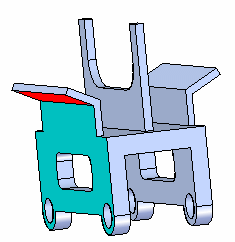
Select the face.
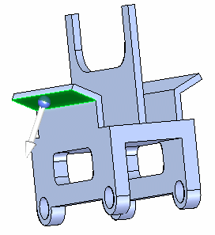
Add the two faces shown to remain rigid with the selected face.
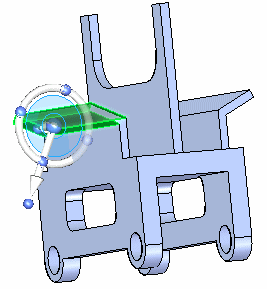
On the Home tab→Face Relate group, choose the Perpendicular relationship command .
Select the side face.
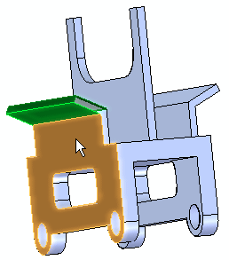
Click the Accept button.
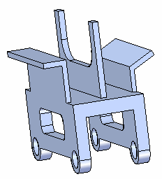
Repeat the alignment for the faces on the opposite side.
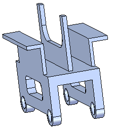
Make the red faces coplanar.
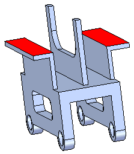
Select the face shown and then add the face on the underside to remain rigid to the selected face.
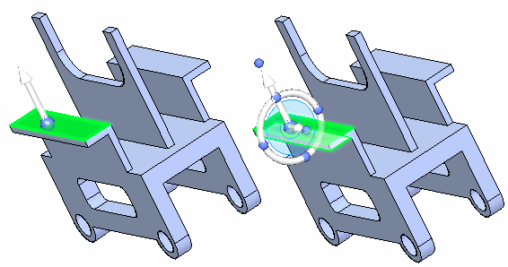
On the Home tab→Face Relate group, choose the Coplanar relationship command .
Select the face shown and then click the Accept button.
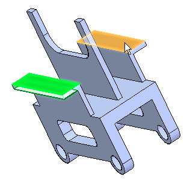
-
Align the green face coplanar with the red face. Make sure to add the face on the underside. Because coplanar design intent relationships are recognized, the faces on the opposite side also align.
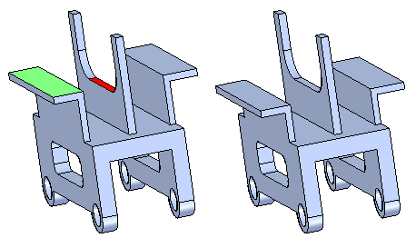
Align the blue faces coplanar with the red face. The blue faces are not coplanar. Use the Multiple Alignment option located on the Coplanar relationship command bar.
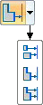
Align the faces on the back side also.
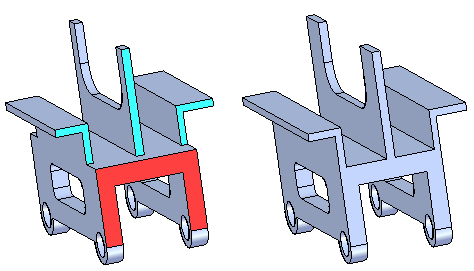
In this activity you learned how to use the Relate command to apply a relationship to modify a part shape. You also learned how to make a relationship permanent (persistent) and also how to make other faces rigid to the face being aligned.
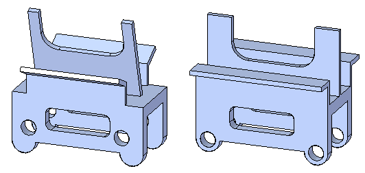
-
Close the file and do not save.
-
Click the Close button in the upper-right corner of the activity window.